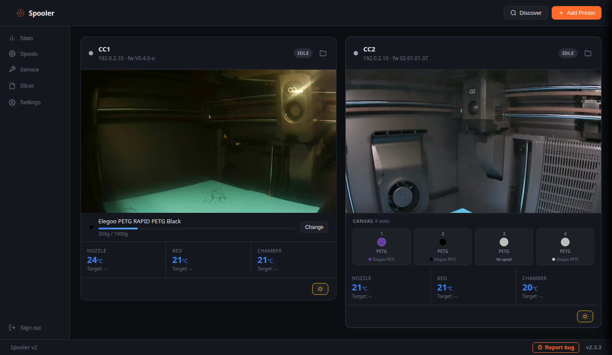
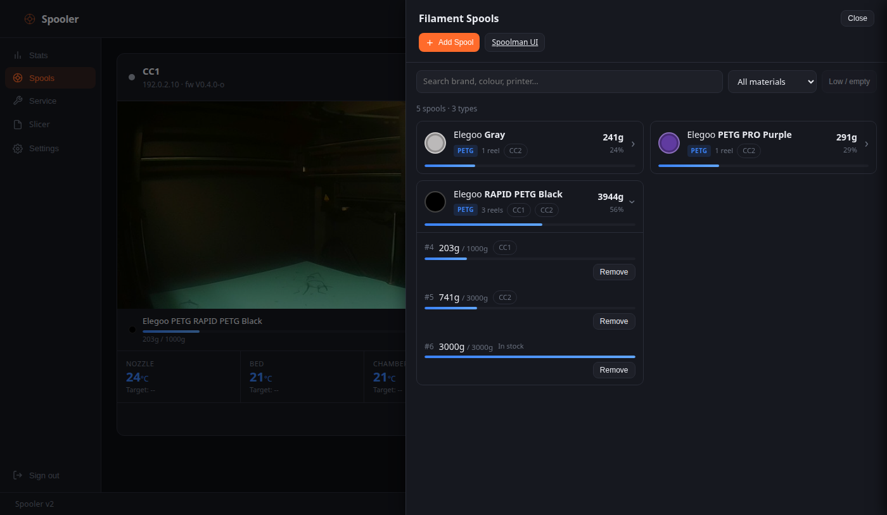
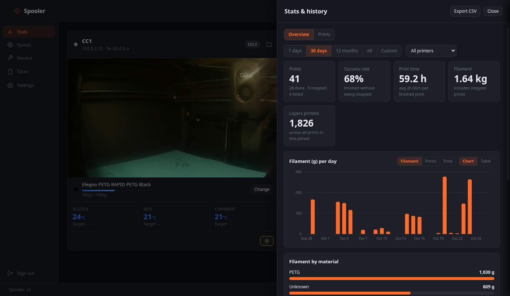

A self-hosted dashboard for your Elegoo Centauri Carbon printers
See all your Centauri Carbon (CC1 and CC2) printers in one browser tab or on your phone. Live camera, notifications with a picture, filament tracking with Spoolman and a history of every print. Free, open source, and nothing leaves your network.
Install in two commands View on GitHub
Why Spooler
All printers in one place
Status, progress, temperatures and the camera for every printer on one screen, also on your phone as an installable app (PWA).
Knows what is on each spool
Links the Canvas slots to your Spoolman spools and deducts the filament that was actually used, per print, from the right spool.
Tells you when something is wrong
Push, ntfy, Telegram, Discord or a webhook for finished, paused or failed prints, optionally with a camera picture.
Yours, not a cloud
Runs on your own server. Open source (AGPL-3.0). Password protected, with HTTPS and API keys for your own tools.
What it does
Live status and camera
Idle, preparing, printing, paused, done, failed, with the cause and error code when a print stops. MJPEG camera behind login.
Progress and control
Layer count, percentage, time left. Pause, resume, stop, print speed and the light. Upload and start files from the browser.
Filament tracking
Live grams per print, Canvas slots linked to Spoolman, a retry queue if Spoolman is unreachable, and low spool warnings.
History and statistics
Every print with the picture taken when it ended, per period and printer, reference numbers and CSV export.
Service logbook
Note what you did to each printer and get a reminder after a set number of print hours or days. Click a printer to see its parts counting down.
Spaghetti detection (optional)
Watches running prints through the camera with an Obico detector that you run yourself, and notifies you with a picture.


Install
You need Docker on a computer or server on the same network as your printers.
curl -fsSL https://raw.githubusercontent.com/tharje/spooler-v2/main/docker-compose.yml -o docker-compose.yml docker compose up -d
Open http://<server-ip>:8080 and create your account. Spooler finds the printers on the network by itself. To update later: docker compose pull && docker compose up -d. A Python install without Docker is described in the README.
Supported printers
| Printer | Status | Notes |
|---|---|---|
| Elegoo Centauri Carbon (CC1) | Supported | Status, camera, controls, upload, Canvas, light |
| Elegoo Centauri Carbon 2 (CC2) | Supported | Status, camera, controls, upload, Canvas, light |
| Prusa (PrusaLink) | Experimental | Basic monitoring |
| Klipper (Moonraker) | Experimental | Basic monitoring |
Spooler tells you when a firmware version has not been tested yet. See the README for the list of tested versions.
Help make it better
Spooler is built and tested on a few printers, so reports from other printers and firmware versions are the most useful thing you can send. Tell us what works on yours, report a problem with the Report bug button inside Spooler, suggest an idea, or send a pull request.
Questions
Does it need internet or an account?
No. Everything runs on your own network. Internet is only used for optional things you switch on yourself, such as push or Telegram notifications.
Does it replace Spoolman?
No, it works with it. Spoolman keeps your spool inventory, and Spooler tells it how much each print used. The Docker setup starts both.
Can I use it on my phone?
Yes. Open it in the phone's browser and choose Add to Home Screen. Use HTTPS (port 8443, or Tailscale serve) for the full app experience.
Is it safe to leave on?
It is password protected, supports HTTPS and uses scoped API keys. Do not expose it directly to the internet; use a VPN such as Tailscale for access from outside your home.
Is it affiliated with ELEGOO?
No. Spooler is an independent project. ELEGOO and Centauri Carbon are trademarks of their respective owners.
Something does not work. What do I do?
Use Report bug in the footer of Spooler; it prepares a GitHub issue with your printer model and firmware and leaves out addresses and secrets.